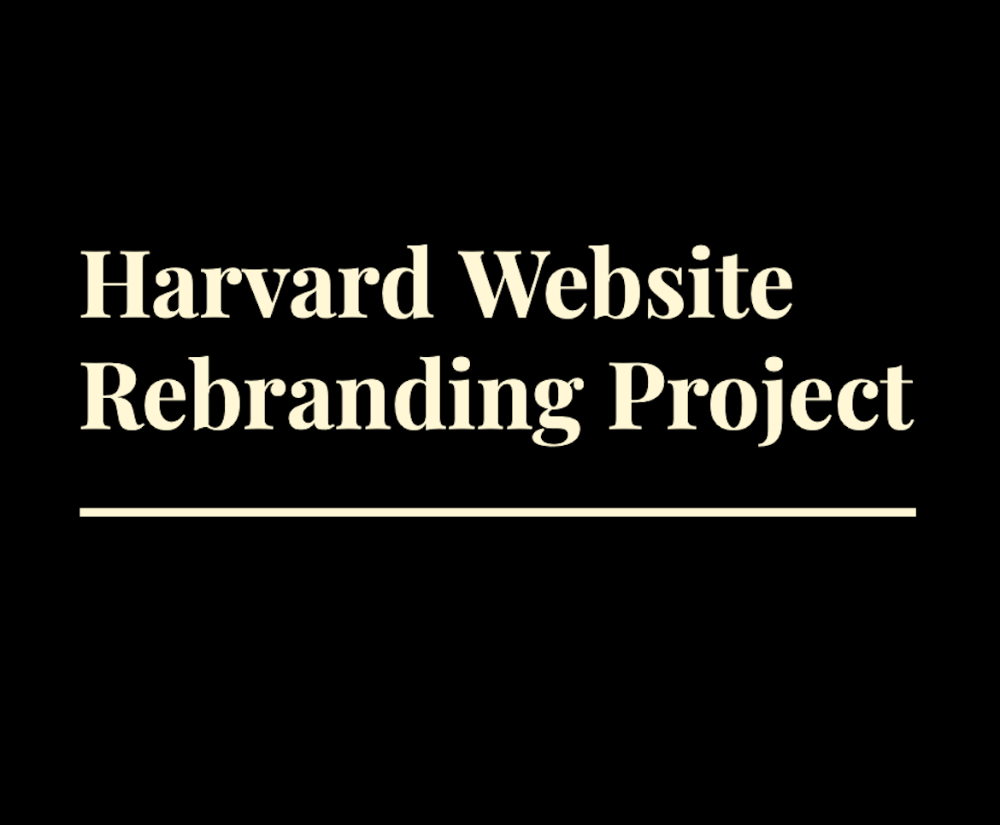

Working on complex problems helps me fufill my passion in helping others and creating a difference in people's lives. Thank you for visiting my page, I've been coding it myself so it's still a work in progress!

Mental Health with Milennials App UX/UI

The Pandemic Experience App UX/UI
Harvard University redesign App + Website UX/UI
How I work
Whether it's creating a voice for someone, or solving a problem to come to a better solution,I am skilled in branding,visual identity and User Experience design. When I am not designing or doing research, I enjoy exercising and cooking. I also enjoy drawing, writing poetry or reading/learning new things! I extensively use design research to look, understand, and build a a more creative, user intutiave solution.I enjoy getting my hands dirty, not literally but where I can dig into the problem and find pain points so I can create a better solution. I thoroughly enjoy writing my thoughts down and sketching as my own canvas to create multiple solutions.